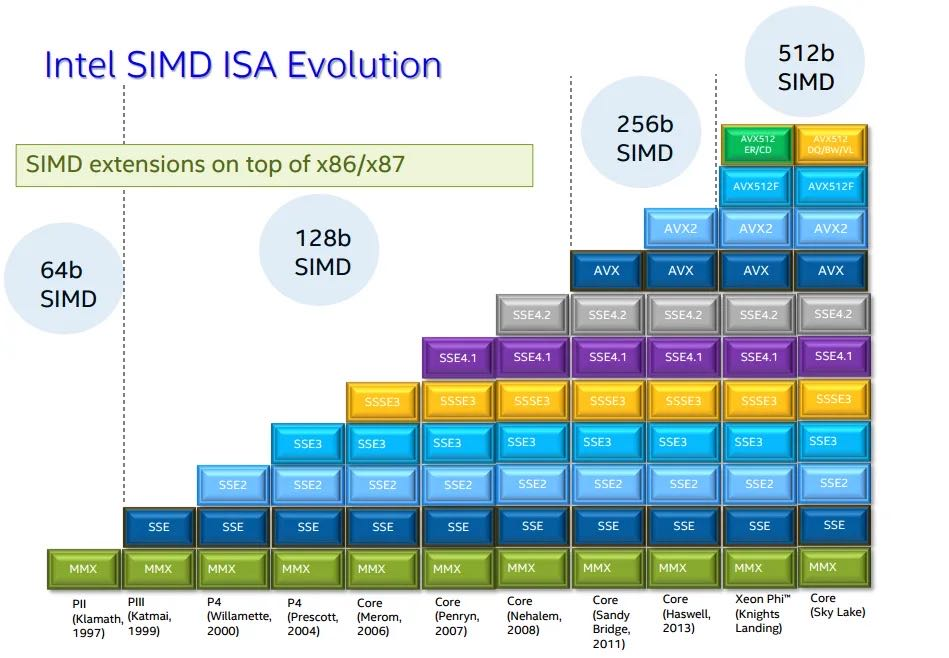
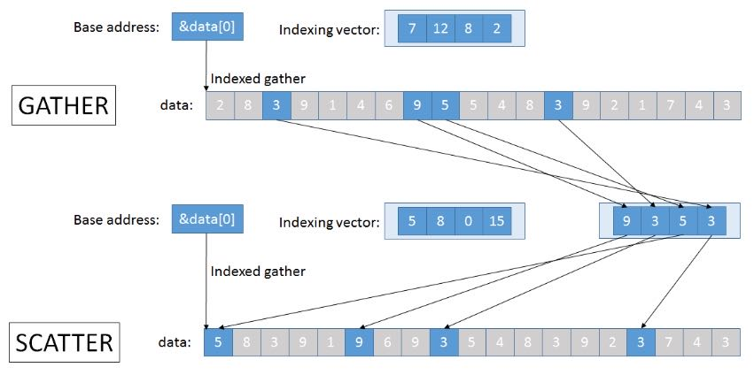

Algorithmica SIMD
https://en.algorithmica.org/hpc/simd/
CPU支持指令集合情况，以及每种指令集处理宽度

检查是否支持某个指令集
#define CHECK_CPUID(x) \ do { \ int ok = __builtin_cpu_supports(x); \ cout << "support '" << x << "' = " << (ok ? "true" : "false") << "\n"; \ } while (0) void test_cpu_supports() { HEADER(); CHECK_CPUID("sse"); CHECK_CPUID("sse2"); CHECK_CPUID("avx"); CHECK_CPUID("avx2"); CHECK_CPUID("avx512f"); }
如何处理trailing elements？可以单独处理，也可以padding
The main challenge of using SIMD is getting the data into contiguous fixed-sized blocks suitable for loading into registers. In the code above, we may in general have a problem if the length of the array is not divisible by the block size. There are two common solutions to this:
We can “overshoot” by iterating over the last incomplete segment either way. To make sure we don’t segfault by trying to read from or write to a memory region we don’t own, we need to pad the arrays to the nearest block size (typically with some “neutral” element, e. g. zero). Make one iteration less and write a little loop in the end that calculates the remainder normally (with scalar operations).
Humans prefer #1 because it is simpler and results in less code, and compilers prefer #2 because they don’t really have another legal option.
大部分SIMD指令的名字规则还是有迹可循的
- [Intel® Intrinsics Guide](https://www.intel.com/content/www/us/en/docs/intrinsics-guide/index.html)
- [x86 intrinsics cheat sheet v1.0.pdf](chrome-extension://mhjfbmdgcfjbbpaeojofohoefgiehjai/index.html)
Most SIMD intrinsics follow a naming convention similar to _mm<size>_<action>_<type> and correspond to a single analogously named assembly instruction. They become relatively self-explanatory once you get used to the assembly naming conventions, although sometimes it does seem like their names were generated by cats walking on keyboards (explain this: punpcklqdq).
A very helpful reference for x86 SIMD intrinsics is the Intel Intrinsics Guide, which has groupings by categories and extensions, descriptions, pseudocode, associated assembly instructions, and their latency and throughput on Intel microarchitectures. You may want to bookmark that page.
The Intel reference is useful when you know that a specific instruction exists and just want to look up its name or performance info. When you don’t know whether it exists, this cheat sheet may do a better job.
GCC可以通过定义vector type来帮助auto-vectorization，但是某些时候使用intrinsic还是必要的
typedef int v8si __attribute__ (( vector_size(32) )); // type ^ ^ typename size in bytes ^ typedef double v4d __attribute__ (( vector_size(32) )); v4d a[100/4], b[100/4], c[100/4]; for (int i = 0; i < 100/4; i++) c[i] = a[i] + b[i]; v8f x; int mask = _mm256_movemask_ps((__m256) x); // <--- You have to do it explicitly.
编译器可以实现auto-vec但是并不保证，使用库的话就更加显式些。 https://github.com/jfalcou/eve
There are also many third-party libraries for different languages that provide a similar capability to write portable SIMD code and also implement some, and just in general are nicer to use than both intrinsics and built-in vector types. Notable examples for C++ are Highway, Expressive Vector Engine, Vector Class Library, and xsimd.
Using a well-established SIMD library is recommended as it greatly improves the developer experience. In this book, however, we will try to keep close to the hardware and mostly use intrinsics directly, occasionally switching to the vector extensions for simplicity when we can.
打印vectorized-value.
void print(__m256i v) { auto t = (unsigned*) &v; for (int i = 0; i < 8; i++) std::cout << std::bitset<32>(t[i]) << " "; std::cout << std::endl; }
对于Non-Contiguous Load需要使用gather-scatter操作，这些操作主要优势体现在复杂计算上，如果gather起来只是简单的操作，那么意义不是很大。Gather在AVX2上有了，Scatter在AVX512上才有，看来还是初步阶段。如果scatter性能不行的话，那么工程师就需要花精力在平衡各种操作的数据布局上。

Later SIMD extensions added special “gather” and “scatter instructions that read/write data non-sequentially using arbitrary array indices. These don’t work 8 times faster though and are usually limited by the memory rather than the CPU, but they are still helpful for certain applications such as sparse linear algebra.
Gather is available since AVX2, and various scatter instructions are available since AVX512.
The purpose of gather and scatter is not to perform memory operations faster, but to get the data into registers to perform heavy computations on them. For anything costlier than just one addition, they are hugely favorable.
The lack of (fast) gather and scatter instructions makes SIMD programming on CPUs very different from proper parallel computing environments that support independent memory access. You have to always engineer around it and employ various ways of organizing your data sequentially so that it be loaded into registers.
编译器为了做auto-vectorization, 通常需要确保两个内存地址不重叠，所以会生成两个版本：一个是为了应对地址重叠的，另外一个则是没有重叠可以利用SIMD。也可以使用 `__restrict__` 关键字以及 `ivdep` 来告诉编译器没有重叠。
// When the compiler can’t prove that the function may be used for intersecting arrays, it has to generate two implementation variants — a vectorized and a “safe” one — and insert runtime checks to choose between the two. To avoid them, we can tell the compiler that we are that no memory is aliased by adding the __restrict__ keyword: void add(int * __restrict__ a, const int * __restrict__ b, int n) { for (int i = 0; i < n; i++) a[i] += b[i]; } // The other way, specific to SIMD, is the “ignore vector dependencies” pragma. It is a general way to inform the compiler that there are no dependencies between the loop iterations: #pragma GCC ivdep for (int i = 0; i < n; i++) // ...
告诉编译器内存地址对齐可以用 `alignas` 和 `std::assumed_aligned` 关键字
Alignment. The compiler also doesn’t know anything about the alignment of these arrays and has to either process some elements at the beginning of these arrays before starting the vectorized section or potentially lose some performance by using unaligned memory accesses.
To help the compiler eliminate this corner case, we can use the alignas specifier on static arrays and the std::assume_aligned function to mark pointers aligned.
编译器有选项可以告诉为什么没有使用auto-vectorization
Checking if vectorization happened. In either case, it is useful to check if the compiler vectorized the loop the way you intended. You can either compiling it to assembly and look for blocks for instructions that start with a “v” or add the -fopt-info-vec-optimized compiler flag so that the compiler indicates where auto-vectorization is happening and what SIMD width is being used. If you swap optimized for missed or all, you may also get some reasoning behind why it is not happening in other places.